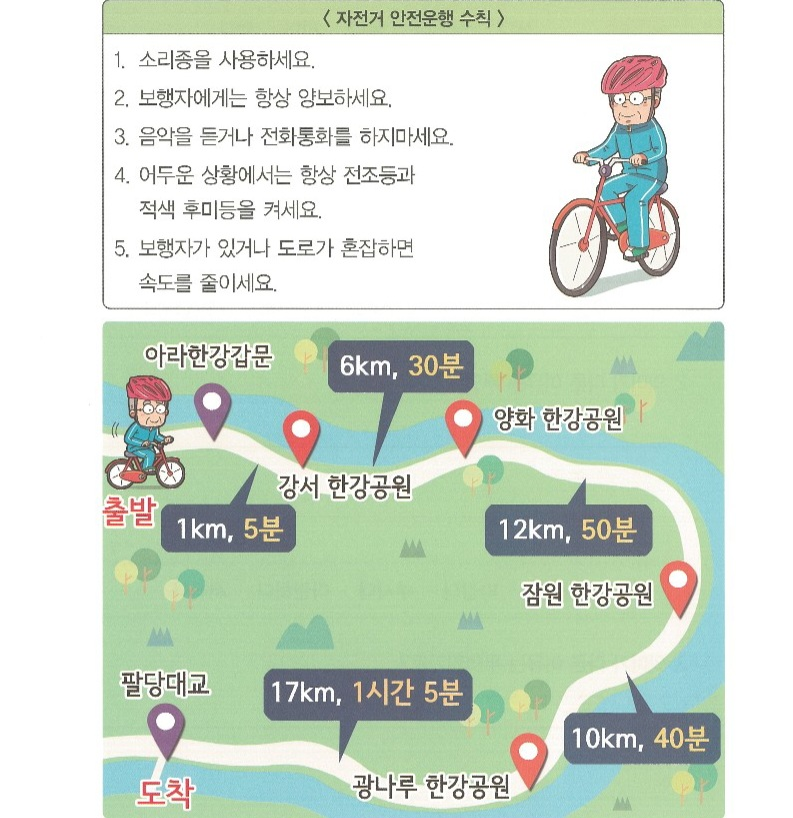

자전거 안전운행 수칙을 확인하고, 자전거 코스 문제를 풀어보세요.

안전운행 수칙을 보며 맞으면 O, 틀리면 X를 적어보세요.
소리종을 사용합니다
O
X
자전거를 타며 음악을 듣거나 전화통화를 합니다
O
X
보행자에게는 항상 양보하세요
O
X
도로가 혼잡할 때는 속도를 내서 빨리 갑니다
O
X
어두운 상황에서는 항상 전조등과 적색 후미등을 켭니다
O
X
경숙 씨는 아라한강갑문에서 출발하여 광나루 한강공원에 도착하였습니다. 소요된 시간과 자전거를 탄 거리를 적어보세요.
시간 답안 작성시 분단위로 입력해주세요.
소요시간:
분 거리:
km
입력
기욱 씨는 오후 3시 30분에 아라한강갑문에서 출발하여 팔당대교까지 완주 후 자신의 동네인 잠원 한강공원으로 돌아갔습니다. 기욱 씨가 잠원 한강공원에 도착한 시간과 총 거리를 적어보세요.
시간 답안 작성시 X시 X분 형식으로 입력해주세요.
도착시간:
분 거리:
km
입력
자전거 운동 시 30분당 300칼로리라 소모됩니다. 길회씨는 강서 한강공원에서 출발하여 광나루 한강공원에 도착했을 때 소모되는 칼로리량은 얼마인가요?
칼로리 소모량:
입력